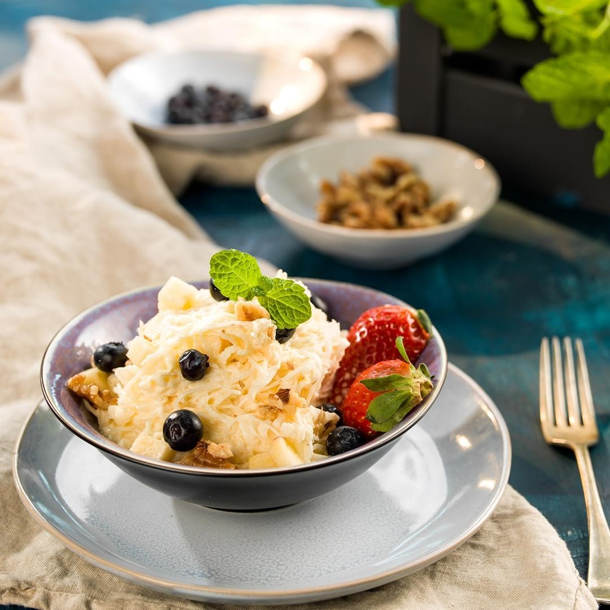

Zelerový šalát podľa @komora_coopjednota — Normy Jedál
Netradičný šalát prekvapí výraznou chuťou. Či už s chrumkavými hriankami na večeru, alebo šťavnatým mäskom na obed. Videorecept nájdete na bit.ly/zelerovy-salat. 👌⠀
#komoragazdin #recept #videorecept #gazdinka #salat #zeler #zelerovysalat #zelenina #ovocie #jablko #majoneza #orechy #vlasskeorechy #rychlysalat #rychlyobed #dobruchut